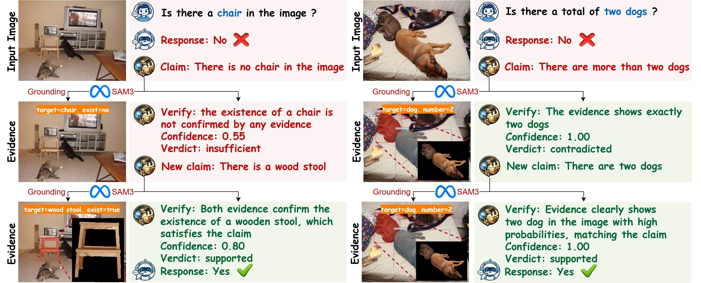
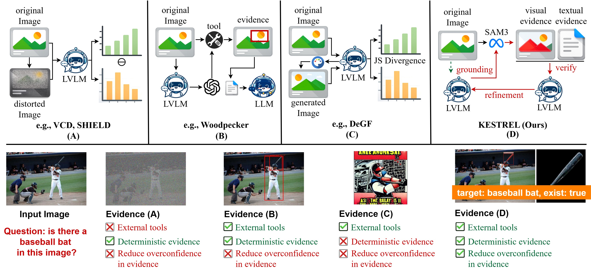
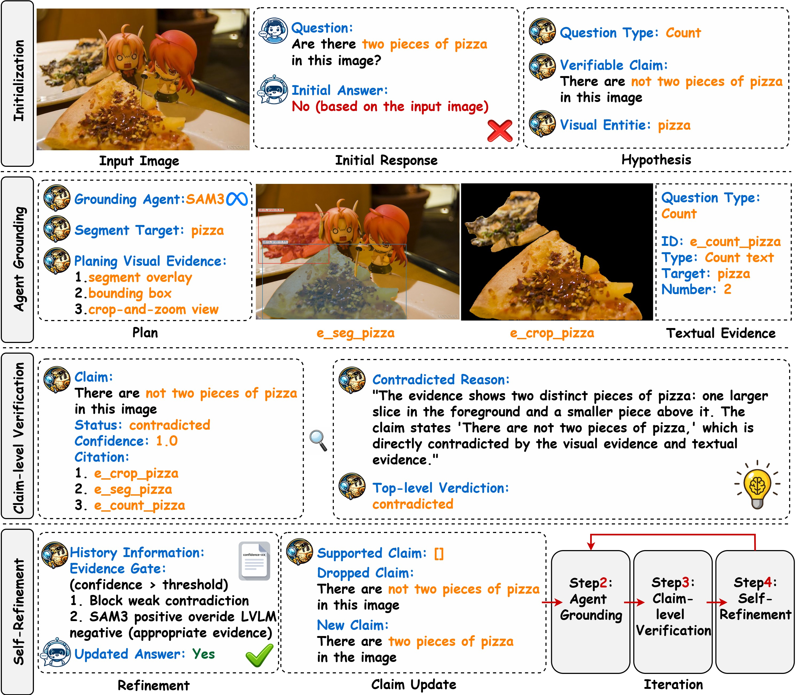
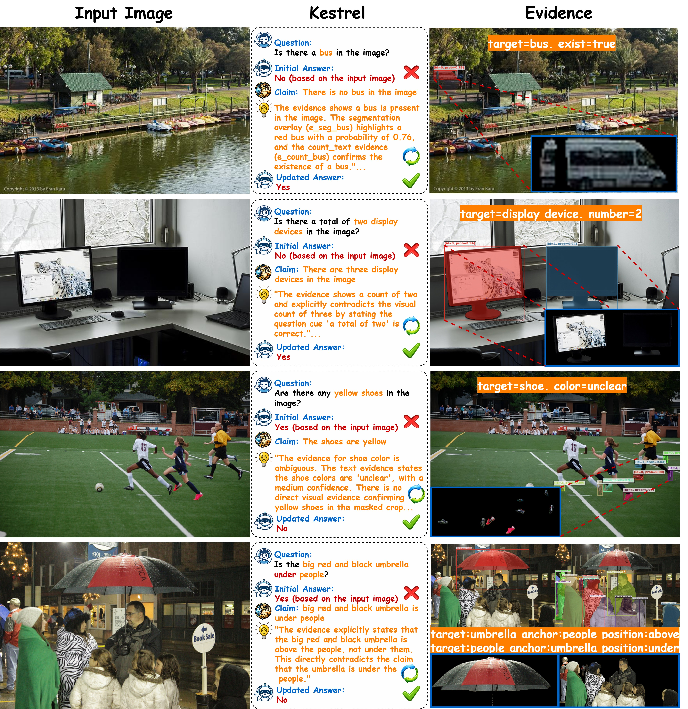
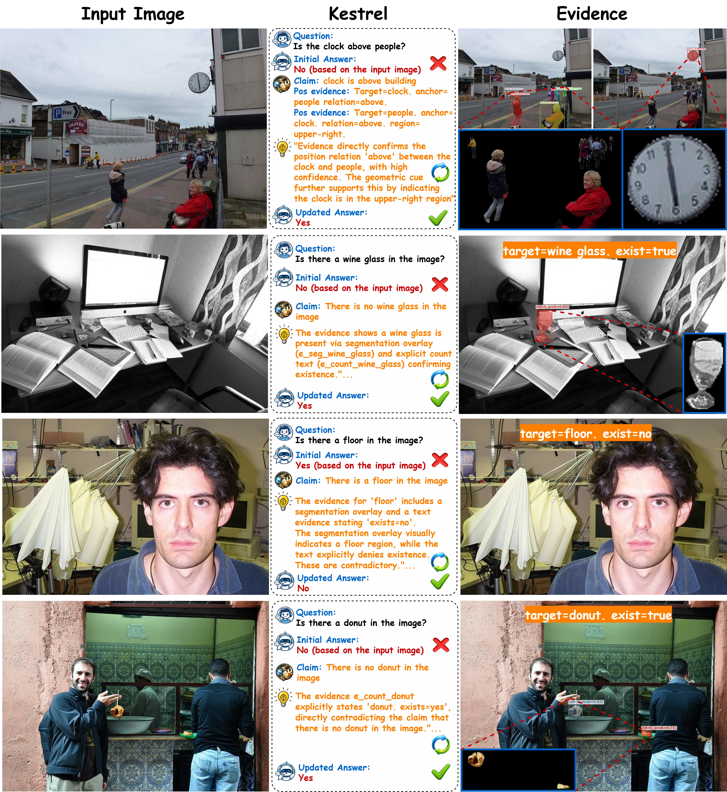
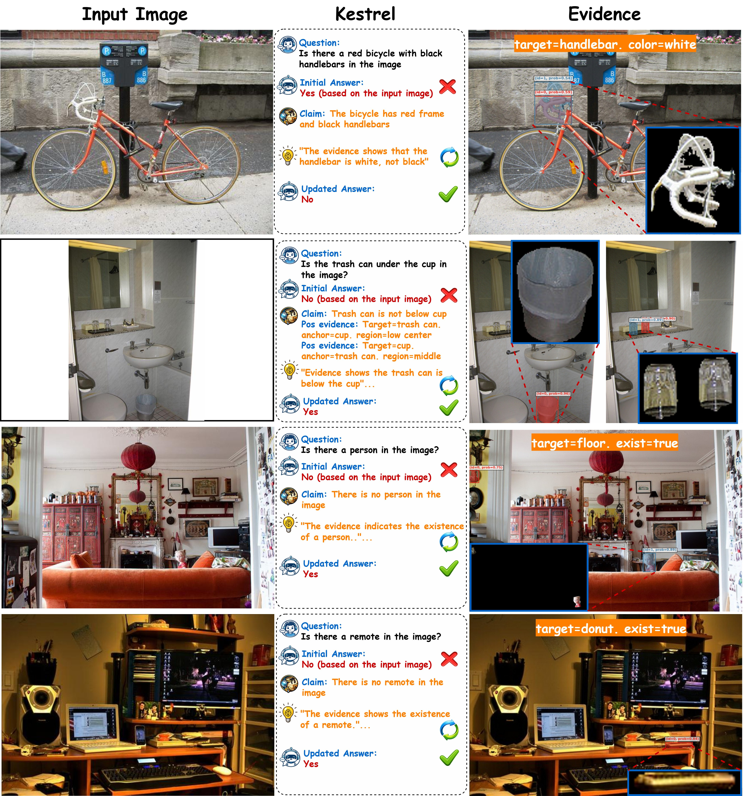
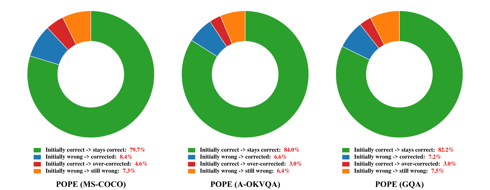

KESTREL
Grounding Self-Refinement for LVLM Hallucination Mitigation

Abstract
Large vision-language models (LVLMs) have become increasingly strong but remain prone to hallucinations in multimodal tasks, which significantly narrows their deployment. As training these LVLMs to avoid hallucinations becomes prohibitively expensive for larger models, training-free methods offer a cheap and flexible solution to this problem, yet existing approaches based on decoding or tool use often bring limited gains and/or weak interpretability. We propose Kestrel, a training-free framework for LVLM hallucination mitigation that combines an explicit visual-grounding agent with evidence-verified self-refinement mechanism. In detail, Kestrel first collects explicit visual evidence and converts tool outputs into reusable and structured textual evidence. Second, to take full advantage of these evidence, Kestrel verifies them via an LVLM judge for evidence checking, then iteratively self-refine answers based on verified evidence to reduce the risk of over-correction. Extensive experiments show that Kestrel improves performance over strong baselines across hallucination benchmarks (e.g., average +3.31% on POPE and +28.34 on MME-Hallucination with Qwen3-VL), while providing transparent verification traces for hallucination diagnosis and analysis --- e.g., both the integrated self-refinement module and grounding agent contributing an average +2.0% gain on POPE.
Paradigm Comparison
Compared with prior strategies, KESTREL emphasizes external grounding tools, deterministic evidence, and verification-driven self-refinement.

Framework
KESTREL follows an agent grounding refinement loop: intialization, agent grounding, claim-level verification, and self-refinement.

Given an image-question pair, Kestrel follows a training-free four-stage pipeline for LVLM hallucination mitigation: (1) Initialization, which obtains an initial answer and rewrites it into question-aligned verifiable claims with associated visual entities and claim types; (2) Agent Grounding, which invokes an external SAM3-based grounding agent to collect explicit visual evidence (e.g., segmentation overlays, boxes, and crop-and-zoom views) and convert them into structured textual evidence; (3) Claim-level Verification, which verifies each claim against the cited evidence to produce claim-wise verdicts, confidence scores, and a top-level verification decision; and (4) Self-Refinement, which performs evidence-gated answer updating based on the current and previous verification traces.
Illustrative Examples
Representative cases covering object existence, counting, attributes, and spatial or relational reasoning.



Correction Behavior
A high-level view of how initial answers are preserved, corrected, or over-corrected after refinement.

Quantitative Results
POPE
Higher accuracy (↑) indicates better performance. Best results are bolded and second-best results are underlined.
| Backbone | Method | MS-COCO Rand. | MS-COCO Pop. | MS-COCO Adv. | A-OKVQA Rand. | A-OKVQA Pop. | A-OKVQA Adv. | GQA Rand. | GQA Pop. | GQA Adv. |
|---|---|---|---|---|---|---|---|---|---|---|
| Qwen3-VL | Baseline | 89.00 | 86.92 | 86.20 | 92.36 | 86.67 | 81.87 | 90.70 | 83.63 | 81.50 |
| Qwen3-VL agent | 91.03 | 88.06 | 86.13 | 92.87 | 85.20 | 78.03 | 91.41 | 81.81 | 78.30 | |
| VCD | 90.40 | 88.80 | 87.41 | 93.53 | 87.86 | 82.00 | 91.56 | 85.76 | 81.93 | |
| Woodpecker | 89.97 | 88.03 | 87.10 | 93.23 | 88.90 | 83.33 | 91.27 | 86.27 | 82.77 | |
| RITUAL | 86.20 | 83.67 | 82.27 | 87.67 | 83.50 | 77.76 | 86.86 | 82.30 | 78.23 | |
| OPERA | 90.50 | 88.83 | 87.50 | 93.76 | 89.50 | 83.86 | 91.80 | 87.11 | 83.30 | |
| DeGF | 90.33 | 88.16 | 86.90 | 92.96 | 87.70 | 82.61 | 91.13 | 83.79 | 82.00 | |
| Kestrel (ours) | 91.53 | 89.30 | 87.53 | 93.46 | 91.73 | 86.76 | 91.67 | 90.33 | 86.27 | |
| InternVL3.5 | Baseline | 90.77 | 88.10 | 85.73 | 92.67 | 87.83 | 81.53 | 89.77 | 84.10 | 81.31 |
| VCD | 91.35 | 89.22 | 87.60 | 92.87 | 89.73 | 83.73 | 91.60 | 85.07 | 83.37 | |
| Woodpecker | 91.20 | 89.11 | 87.50 | 93.73 | 89.80 | 84.00 | 91.43 | 85.16 | 83.26 | |
| RITUAL | 91.60 | 89.03 | 87.48 | 93.71 | 89.75 | 83.90 | 91.39 | 85.18 | 83.29 | |
| OPERA | 91.53 | 89.18 | 87.55 | 93.55 | 89.79 | 83.81 | 91.45 | 85.20 | 83.31 | |
| DeGF | 91.43 | 89.12 | 87.37 | 93.39 | 89.68 | 84.11 | 91.48 | 85.06 | 83.20 | |
| Kestrel (ours) | 91.27 | 89.27 | 88.10 | 93.57 | 91.80 | 87.13 | 91.57 | 89.87 | 86.53 |
MME-Hallucination
Higher scores (↑) indicate better performance. We report both backbone-specific tables below.
Qwen3-VL
| Backbone | Method | Existence | Count | Position | Color | MME Score |
|---|---|---|---|---|---|---|
| Qwen3-VL | Baseline | 195.00 | 175.00 | 168.33 | 193.33 | 731.66 |
| Qwen3-VL agent | 200.00 | 181.67 | 168.33 | 193.33 | 743.33 | |
| VCD | 195.00 | 180.00 | 168.33 | 193.33 | 736.66 | |
| Woodpecker | 195.00 | 173.33 | 168.33 | 195.00 | 731.66 | |
| RITUAL | 195.00 | 180.00 | 168.33 | 193.33 | 736.66 | |
| OPERA | 195.00 | 180.00 | 168.33 | 200.00 | 743.33 | |
| Kestrel (ours) | 200.00 | 186.67 | 180.00 | 193.33 | 760.00 |
InternVL3.5
| Backbone | Method | Existence | Count | Position | Color | MME Score |
|---|---|---|---|---|---|---|
| InternVL3.5 | Baseline | 200.00 | 175.00 | 175.00 | 193.33 | 743.33 |
| VCD | 200.00 | 175.00 | 175.00 | 193.33 | 736.66 | |
| Woodpecker | 200.00 | 166.67 | 161.67 | 186.67 | 715.01 | |
| RITUAL | 195.00 | 175.00 | 175.00 | 193.33 | 738.33 | |
| OPERA | 195.00 | 173.33 | 175.00 | 195.00 | 738.33 | |
| DeGF | 195.00 | 175.00 | 168.33 | 188.33 | 726.66 | |
| Kestrel (ours) | 200.00 | 186.67 | 181.67 | 195.00 | 763.34 |
BibTeX
If you find our work helpful for your research, please consider giving a citation 📃
@misc{mao2026kestrelgroundingselfrefinementlvlm,
title={Kestrel: Grounding Self-Refinement for LVLM Hallucination Mitigation},
author={Jiawei Mao and Hardy Chen and Haoqin Tu and Yuhan Wang and Letian Zhang and Zeyu Zheng and Huaxiu Yao and Zirui Wang and Cihang Xie and Yuyin Zhou},
year={2026},
eprint={2603.16664},
archivePrefix={arXiv},
primaryClass={cs.CV},
url={https://arxiv.org/abs/2603.16664},
},
}